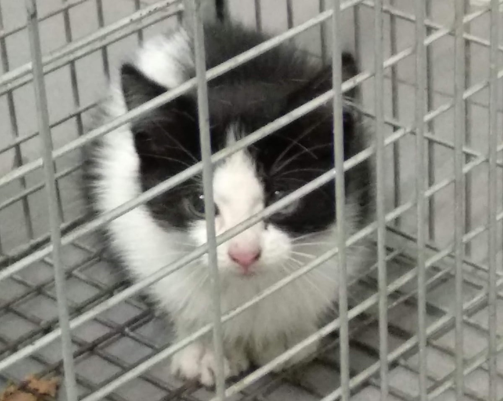

Gatos de acogida
Satur
Wicca
Piro

Dusha
Fenixa

Lucas
Rosco
Misumi
Pepa y Tomás
Satur
Satur fue nuestra primera acogida.
Llevábamos un tiempo pensando en ello y un día, revisando Facebook, me encontré una publicación en Miauka y otra en Katubihotz donde una chica buscaba una casa de acogida temporal para su gato, en espera de que le concedieran un piso, porque donde estaba viviendo, no le dejaban tenerlo.
Así fue como acabó en nuestra casa este abuelito de 11 años, buenazo y tranquilo en general, pero que, para nuestro asombro, también tenía sus momentos de marcha (en especial por la noche, como cualquier gato). Eso sí, es el mejor gato-despertador que hemos tenido nunca, no paraba de maullar por la mañana pidiendo comida...
Pensamos que, al ser mayor, se llevaría mejor con Sinfa, pero, para nuestra sorpresa, hizo mejores migas con Neftis, a pesar de tener solo un año. Incluso le quitó su sitio favorito en el rascador y a ella no pareció importarle. Ella lo aceptó enseguida como miembro de su manada y daba gusto verlos acurrucados juntos en el sofá.
Pasó tres meses en nuestra casa hasta que le llegó el momento de volver a su nuevo hogar con su humana, que estaba deseando recuperar a su peludo.
 CERRAR
CERRARWicca
De todas las acogidas, este es el caso más impresionante que hemos tenido.
Cuando rescataron a esta gata, estaba ya moribunda y, de no ser por una de las voluntarias de Katubihotz, no habría podido sobrevivir. Los primeros días los pasó en una clínica veterinaria, después necesitaba una casa de acogida donde poder recuperarse y ponerse fuerte.
A pesar de que ya nos lo habían advertido cuando nos la trajeron, al principio no entendíamos que era una gata feral, pero en diversas ocasiones, obstinados en interactuar con ella, la felina nos lo mostró. No hace falta contar que todo intento de socializarla en los diez meses que estuvo con nosotros fue inútil.
Tenía un aspecto lamentable cuando llegó: flaca, sin la mayor parte de piezas dentales (y aún perdió más), zonas sin pelo en gran parte de su cuerpo y donde tenía pelo, era feo, como estropeado. Además, sufría de inmunodeficiencia felina y calicivirus (por lo que debía vivir separada de nuestras gatas), estaba algo sucia y no se limpiaba (ya sabemos que, cuando un gato no se limpia, es que no se encuentra bien). Pero poco a poco se fue obrando el milagro y aquel saco de huesos se convirtió en una hermosa pantera.
Solíamos (y solemos, a veces) bromear diciendo que teníamos a una gata encerrada en una caja. Y es que, de no ser porque contábamos con una cámara para vigilarla, habríamos pensado que no se movía de ahí, pues no lo hacía en nuestra presencia y solo salía de noche. Gracias a esa cámara pudimos ver cómo evolucionaba.
Wicca no acabó siendo adoptada, como suele ser lo deseable. Una gata feral no está hecha para vivir en una casa y, mucho menos, convivir con humanos. Ella vive ahora en un terreno donde tienen un caserío y unas viñas, libre, como ella quería.
Piro
Una noche de Semana Grande, volviendo a casa, dos voluntarias de Katubihotz se encontraron a este tigrecito, ¡jugando con ellas! Un gato callejero no habría actuado de esa forma, así que dieron por seguro que se trataba de un gato casero.
Piro era un gato muy simpático y muy mimoso, pero tenía un gran problema: así, sin venir a cuento, mordía. Muchas veces nos preguntamos cómo acabaría en la calle; quizás la familia en la que estuvo no le enseñó de pequeño que con las manos no se juega y cuando se hizo grande, la situación acabó siendo insoportable; o puede que se separara (o lo separaran) de su madre cuando aún era demasiado pequeño y no aprendiera a medir su fuerza. El caso es que acabó en nuestra casa.
Como Wicca, tenía inmunodeficiencia, así que no podía convivir con nuestras gatas, por lo que también tuvimos que mantenerlo apartado. Habríamos querido para él un hogar donde tuvieran paciencia con su problema y lo mimaran mucho, pero, por desgracia, no fuimos capaces de quitarle esa manía de morder y era imposible darlo en adopción en esas condiciones. Aunque en Katubihotz tienen recursos para todo y acordaron con un hombre poder tener a Piro en su casa con terreno, donde las vistas son impresionantes.
Dusha
A Dusha la rescatamos nosotros mismos con una jaula-trampa que nos dejaron de Katubihotz una noche fría y lluviosa de finales de noviembre. Llevávamos días escuchando maullar a un gatito desesperadamente, pero no conseguíamos dar con él para atraparlo o se nos escapaba cuando estábamos cerca. Esa noche, una vez localizada, preparamos la jaula-trampa, se la pusimos cerca y no nos costó mucho que entrara al rico olor del paté. No voy a contar el susto que se llevó la pobre al cerrarse la puerta de golpe, ni la noche que pasó maullando todo el tiempo (acabó quedándose afónica). Seguramente echaba de menos a su mamá y a sus hermanitos o le aterraba estar en un lugar desconocido, donde vivía gente que le podía hacer daño. O las dos cosas...
Hasta entonces, todos los gatos nos habían llegado de acogida a través de Katubihotz o por mediación de esta asociación, pero el hecho de haberla rescatado nosotros mismos desde tan pequeña hizo que se tratara de la acogida más especial que hemos tenido hasta ahora.
Nos recomendaron llevarla a la clínica veterinaria Bidebieta y allí nos devolvieron a una gatita totalmente cambiada: de alejarse de nosotros corriendo cuando nos acercábamos, bufarnos, gruñirnos... a dejarse coger (un poco a regañadientes al principio), acurrucarse en nuestro regazo, buscarnos, pedirnos comida... Aparte de limpia, porque venía un poco sucia de la calle.
Aquella alegría y vitalidad que emanaba Dusha, supusieron un soplo de aire fresco en nuestra casa, donde se quedó durante poco más de un mes. Me habría gustado adoptarla, pero sabía que, teniendo a Sinfa y a Neftis, no podíamos permitirnos a una gata más. Si mi ama no hubiese adoptado recientemente a Eguzki, seguramente se la habría quedado porque, además de graciosa y adorable, era una monada con ese pelaje de vaquita. Pero el destino es caprichoso y Dusha estaba destinada a hacer feliz a otra familia.
Fenixa
Fenixa fue encontrada una mañana en su transportín delante de la puerta del refugio de Katubihotz por una de las voluntarias que llegaba en ese momento. El detalle es que su transportín, ¡estaba abierto! Por suerte, la gata seguía dentro y no había sufrido ningún daño físico, teniendo en cuenta que el refugio está situado junto a un parque donde se pasean a perros...
Una vez llegó a nuestra casa, lo primero que hizo fue esconderse asustada en algún rincón. Como he mencionado antes, no sufrió ningún daño físico, pero las heridas del alma son las más difíciles de curar y el abandono que sufrió trajo sus consecuencias.
Los primeros días en nuestra casa, apenas quiso comer nada, se pasaba todo el día escondida en un rincón y, aunque se dejaba tocar, estaba aterrada. Hicieron falta unas dos semanas hasta que empezó a salir de su escondite y hacer más vida por la casa. Poco a poco empezó a convivir más con nosotros y con nuestras gatas y se la veía con más confianza, hasta que llegó el día.
Una pareja se interesó por ella y vino a visitarla. Se enamoraron de ella al instante y estaban ansiosos por que formara parte de su familia, donde había otros dos michis, así que concretamos una fecha para que se la llevaran adoptada en la siguiente visita. Y así es como Fenixa se fue a vivir con una familia amorosa donde nunca más sufrirá un abandono y tendrá la vida feliz que se merece.
Lucas
Érase una vez una familia que vivía feliz con sus dos gatos, hasta que la felicidad se rompió y en el nuevo hogar, los mininos no estaban admitidos. Uno de ellos encontró pronto una adopción y así es como Lucas llegó a nuestra casa.
Tranquilo y mimoso, este señor gato ya había sufrido un abandono antes y por su edad (unos cinco años) le iba a ser difícil encontrar otra familia.
Una mujer mayor vino acompañada de sus dos hijos a verlo. La mujer, aunque todos los días recibía visita y tenía ayuda en casa, vivía sola y estaba buscando un gato para que le hiciera algo de compañía cuando estaba sola. Pero Lucas le pareció demasiado grande para poder manejarse con un gato como él (de hecho, le gustó Sinfa, pero tuvimos que decirle que no estaba en adopción).
Nos alegramos mucho cuando una pareja joven se interesó por él, vino a verlo y decidió adoptarlo. Desafortunadamente, las cosas no salieron tan bien como se esperaba y, después de unos días, Lucas tuvo que volver a nuestra casa.
Pero el espíritu de la Navidad quiso que un alma solitaria decidiera buscar compañía felina. Algo que en un principio no nos dio muy buena espina, por lo precipitadamente que sucedió todo. Me alegra pensar que nos equivocamos y que ahora este gatazo vive feliz con la compañía, los mimos y los juegos que se merece y que tanto necesitaba.
Rosco
Este gatito vivía en una huerta hasta que un día, una de las voluntarias de Katubihotz, se lo encontró con heridas graves por un mordisco de perro. Tuvo que llevarlo al veterinario para que lo curara y le pusiera puntos y después lo trajo a nuestra casa hasta que se recuperara.
Era positivo a inmunodeficiencia felina, por lo que debía estar separado de nuestras gatas. Pero, por lo demás, nos dimos cuenta de que era un gato muy bueno y pedía atención y mimos todo el tiempo, así que era ideal para ser dado en adopción. Pensándolo bien, no entendíamos cómo había estado viviendo en una huerta, cuando se notaba que se trataba de un gato casero, pero estamos seguros de que debía de haberlo pasado muy mal en esa situación.
Los gatos en la calle pasan hambre, sed, frío, miedo, peligros y otras penurias y más, cuando se trata de un gato casero, pues se han acostumbrado a tener todas las comodidades de un hogar y, de pronto, se quedan sin ellas y ya no saben cómo obtener comida, agua y todo lo que necesitan.
Ya no sabemos si por su situación en la huerta, Rosco estaba tan mal que ya no quería limpiarse o es que, debido a que se ensuciaba todos los días, le resultaba inútil limpiarse para volver a ensuciarse, porque llegó bastante sucio, sobre todo en las patas, y le costó mucho limpiarse bien.
Por suerte, gracias a las gestiones de Katubihotz, este mimosón encontró una familia definitiva donde lo cuidan y lo miman como se merece.

Misumi
Se podría pensar que esta divina carey es una gata feral, como Wicca. Huidiza y asustadiza, no le gusta que los humanos se le acerquen y, si intentas tocarla, lo más habitual es que te lleves un zarpazo. Para comprenderlo mejor, nos adentramos un poco en su historia antes de llegar a nuestra casa.
Misumi fue rescatada por Katubihotz de la casa de una persona violenta y con problemas de adicciones, donde viven hacinados unos cuantos gatos: los bebés acaban muriendo y los adultos, flacos por escasez de alimentos y ausencia de cuidados, no dejan de criar por falta de esterilización y a algunos de ellos se les ha encontrado atropellados. Si ella pudiera contarnos lo que ha tenido que vivir allí a su tan corta edad...
Misumi pasó en nuestro hogar una temporada larga. Siendo un cachorro, debería haber sido adoptada en breve tiempo, ya que los cachorros son los más demandados, pero nadie quería una gatita desconfiada y arisca que no se dejase tocar. A decir verdad, lo máximo que conseguimos fue poder estar junto a ella, sentados tranquilamente en el sofá y sin molestarla; se dejaba tocar únicamente cuando se comía el paté que le habíamos puesto, pero se le notaba molesta, así que preferimos dejarla en paz. No interactuaba mucho con Sinfa y Neftis, aunque tampoco se llevaba mal con ellas. Y le encantaba el balcón.
Pero todos los gatos se merecen una oportunidad y ella no iba a ser menos. Misumi encontró un hogar con otros dos gatos en una casa con jardín. Estamos seguros de que lo está disfrutando y nos alegramos mucho por ella. Ojalá que, poco a poco, algún día pueda confiar en los humanos.
Pepa y Tomás
Una mamá gata dejó a Pepa, Tomás y sus hermanitos a buen recaudo en la casa de una mujer. Katubihotz se encargó de los gatitos y todos fueron dados en adopción, excepto a la carey y el panterito, que acabaron en nuestra casa.
Al principio los gatitos no querían saber nada de nosotros, estaban muy asustados y se escondían cada vez que nos acercábamos. Hasta que un día se me ocurrió agitar un plumero para ver si se atrevían a salir para jugar. Pepa fue la primera en salir y a Tomás le costó un poco más, pero fue un gran progreso, porque a partir de ahí, empezaron a coger confianza a pasos agigantados.
Pepa era la que más interactuaba con nosotros, le encantaban las caricias y poco a poco empezó a acercarse por su propia cuenta para acurrucarse en nuestro regazo. En cambio, Tomás detestaba que lo tocáramos, era como si le diéramos un calambrazo, porque se escapaba corriendo. Con el paso del tiempo, empezó a importarle cada vez menos hasta el punto en que, hoy en día, parece que le agrada.
Al haber llegado ambos con unos tres meses, obviamente eran unos terremotos que no paraban quietos nada más que para dormir. Todo el día saltando, corriendo, jugando... Sinfa y Neftis ya se hicieron mayores para tanto movimiento y preferían mantenerse al margen.
A pesar de ser unos cachorros adorables, han estado tres meses en nuestra casa. La mayoría de la gente prefiere adoptar un solo gato y no se da cuenta de que dos (o más) gatos se hacen compañía cuando los humanos no están. Así que parte de esa preciosa etapa de cachorros la hemos disfrutado nosotros. En el caso de Pepa y Tomás, era impensable darlos en adopción por separado: son hermanitos y llevan juntos toda su corta vida, están juntos la mayor parte del tiempo y comparten juegos y correrías, son inseparables...
Y seguirán juntos, porque por fin les ha llegado el turno de irse con la familia que los va a hacer felices y colmar de mimos. Ahora les toca a su nueva Karen y a su Karencio disfrutar de ellos. Pero duele verlos marchar...
Asociaciones mencionadas